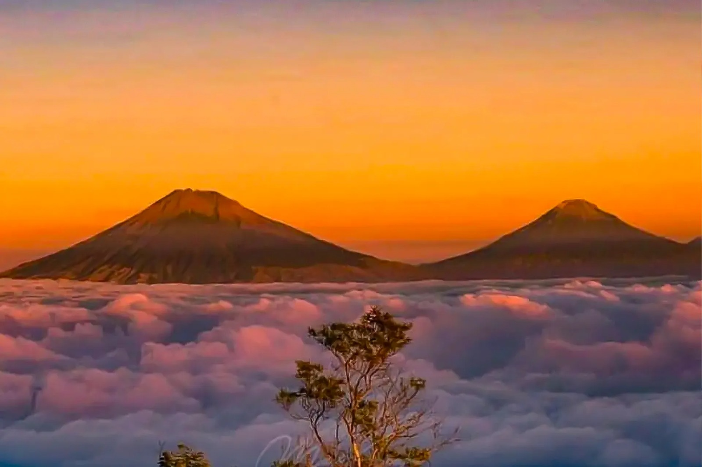

Mengenal Gunung Telomoyo
Gunung Telomoyo (bahasa Jawa: Télåmåyå, Han.: ꦒꦸꦤꦸꦁꦠꦺꦭꦩꦪ) adalah gunung yang terletak di Desa Pandean, Kecamatan Ngablak, Kabupaten Magelang. Gunung ini memiliki ketinggian 1.894 mdpl dan merupakan gunung api yang berbentuk strato (kerucut) tetapi belum pernah tercatat meletus. Gunung Telomoyo dapat terlihat dari kota-daerah lain di sekitarnya, seperti Kota Salatiga, Kecamatan Ambarawa di Kabupaten Semarang dan Kecamatan Grabag di Kabupaten Magelang.
Gunung ini diapit oleh 4 gunung, yakni Gunung Merbabu, Gunung Andong, Gunung Merapi, dan Gunung Ungaran. Gunung Telomoyo ini terbentuk dari sisi selatan Gunung Soropati yang telah tererosi dan runtuh sejak masa Pleistosen. Akibat runtuhan ini, terbentuklah cekungan berbentuk tapal kuda atau huruf U yang membuka ke arah timur-timur laut. Gunung Telomoyo muncul di sebelah selatan depresi ini setinggi 600 m dari dasar cekungan.
Dari atas puncak, pengunjung dapat menikmati pemandangan spektakuler seperti Samudra Awan, Gunung Merbabu, Gunung Andong, Gunung Sumbing, Gunung Sindoro, hingga keindahan Danau Rawa Pening dari ketinggian.
Keunggulan & Daya Tarik
Kemudahan Akses Motor
Satu-satunya gunung di Jawa Tengah yang puncaknya dapat dijangkau langsung menggunakan kendaraan roda dua.
Pemandangan "Negeri di Atas Awan"
Momen matahari terbit (sunrise) dengan lautan awan yang membentang indah saat pagi hari.
Awang Awang Sky View
Spot foto kekinian berlantai kaca transparan untuk melihat pemandangan alam dari ketinggian secara ekstrem.
Galeri Foto


Panduan Berkunjung
- 📍 Lokasi: Perbatasan Magelang & Semarang, Jawa Tengah (Akses utama via Desa Pandean, Ngablak, Magelang).
- ⏰ Waktu Terbaik: Pukul 05.00 WIB (untuk Sunrise) atau sore hari menjelang matahari terbenam.
- 🛵 Ketentuan Kendaraan: Pastikan kondisi rem dan mesin kendaraan (khususnya motor) dalam keadaan prima. Mobil pribadi wajib di parkir di bawah (bisa naik jeep/sewa motor).
- 🧥 Pakaian: Gunakan jaket tebal karena udara di puncak cukup dingin dan berangin.